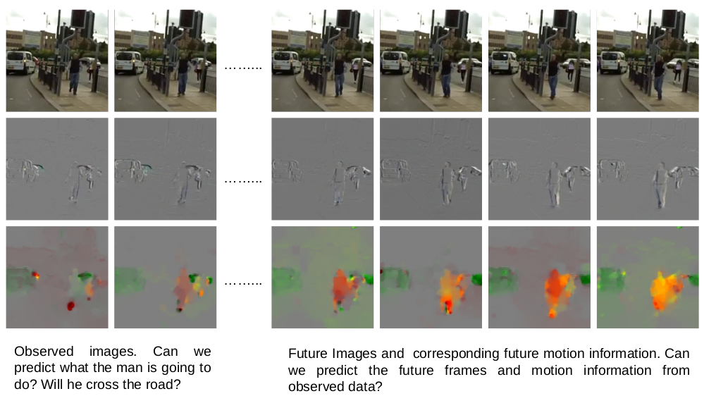

This research is supported by the National Research Foundation Singapore under its AI Singapore Programme (Award Number: AISG-RP-2019-010). Duration : October 2019 to March 2023

Our ability to anticipate the behaviour of others comes naturally to us. For example, an experienced driver can often predict the behaviour of other road users. Similarly, a good table tennis player can estimate the direction of the ball just by observing the movements of the opponent. This phenomenon is called Action Anticipation, the ability to recognise actions of others before
it happens in the immediate future. This is so natural to us but how to develop a computational approach to do the same remains a challenge. It is critical to transfer this ability to computers so that robots may be able to react quickly by anticipating human actions like humans. Robots’ ability to understand what humans might do in the immediate future is important for the development of assistive robotics in domains such as manufacturing and healthcare. The objective of this project is to investigate a novel approach to anticipate human actions, specifically one to five seconds before action happens using visual information in human-robot engagement scenarios. Current action anticipation approaches primarily rely on new loss functions that allow us to
tackle the uncertainty in future predictions. However, these approaches assume observed data contains rich information about the future human actions. Other approaches overcome this limitation by generating appearance information such as objects, environment and context for the future, and then classify those to anticipate future human actions. We argue that movement
of objects and humans are the key indicators to anticipate human actions before they happen. Unfortunately, these approaches are not able to generate most useful information to anticipate actions because they only consider appearance and do not explicitly generate movement information such as motion.
@article{
inavit,
title={Interaction Visual Transformer for Egocentric Action Anticipation},
author={Debaditya Roy and Ramanathan Rajendiran and Basura Fernando},
journal={arXiv},
year={2022},
}
@article{
royabstractgoal,
title={Predicting the Next Action by Modeling the Abstract Goal},
author={Debaditya Roy and Basura Fernando},
journal={arXiv},
year={2022},
}
TDAM: Top-Down Attention Module for Contextually Guided Feature Selection in CNNs
Shantanu Jaiswal and Basura Fernando and Cheston TanECCV 2022 PDFBibtex
@inproceedings{
eccv2022shan,
title={TDAM: Top-Down Attention Module for Contextually Guided Feature Selection in CNNs},
author={Shantanu Jaiswal and Basura Fernando and Cheston Tan},
booktitle={ECCV},
year={2022},
}
Anticipating human actions by correlating past with the future with Jaccard similarity measures
Basura Fernando and Samitha HerathCVPR 2021 PDFBibtex
@article{
Fernando21,
title={Anticipating human actions by correlating past with the future with Jaccard similarity measures},
author={Basura Fernando and Samitha Herath},
booktitle={CVPR},
year={2021},
}
Action Anticipation using Pairwise Human-Object Interactions and Transformers
Debaditya Roy and Basura FernandoIEEE Transactions on Image Processing 2021Impact factor 10.856 PDFBibtex
@article{
2021_TIP_ROY,
title={Action Anticipation using Pairwise Human-Object Interactions and Transformers},
author={Debaditya Roy and Basura Fernando},
journal={IEEE Transactions of Image Processing},
year={2021},
}
Forecasting future action sequences with attention: a new approach to weakly supervised action forecasting
Yan Bin Ng, and Basura FernandoIEEE Transactions on Image Processing 2020 Impact factor 10.856 PDF WebBibtex
@article{
YanBin2020,
title={Forecasting future action sequences with attention: a new approach to weakly supervised action forecasting},
author={Yan Bin Ng, Basura Fernando},
booktitle={IEEE Transactions on Image Processing},
year={2020},
}
Weakly supervised action segmentation with effective use of attention and self-attention.
Yan Bin Ng and Basura FernandoComputer Vision and Image Understanding 2021 PDFBibtex
@article{
CVIU_2021,
title={Weakly supervised action segmentation with effective use of attention and self-attention.},
author={Yan Bin Ng and Basura Fernando},
journal={Computer Vision and Image Understanding},
year={2021},
}
Action anticipation using latent goal learning
Debaditya Roy and Basura FernandoWACV 2022 PDF CodeBibtex
@inproceedings{
wacv22,
title={Action anticipation using latent goal learning},
author={Debaditya Roy and Basura Fernando},
booktitle={WACV},
year={2022},
}
Long-term Action Forecasting Using Multi-headed Attention-based Variational Recurrent Neural Networks
Siyuan Brandon Loh, Debaditya Roy and Basura FernandoCVPR 2022 (Workshop) PDFBibtex
@inproceedings{
cvpr22w,
title={Long-term Action Forecasting Using Multi-headed Attention-based Variational Recurrent Neural Networks},
author={Siyuan Brandon Loh and Debaditya Roy and Basura Fernando},
booktitle={CVPR},
year={2022},
}
A Log-likelihood Regularized KL Divergence for Video Prediction with A 3D Convolutional Variational Recurrent Network
Haziq Razali and Basura FernandoWACV 2021 Generation of Human Behavior Workshop PDFBibtex
@article{
Haziq20,
title={A Log-likelihood Regularized KL Divergence for Video Prediction with A 3D Convolutional Variational Recurrent Network},
author={Haziq Razali and Basura Fernando},
booktitle={WACV},
year={2021},
}
FlowCaps: Optical Flow Estimation with Capsule Networks For Action Recognition
Vinoj Jayasundara, Debaditya Roy and Basura FernandoWACV 2021 PDFBibtex
@article{
Vinoj,
title={FlowCaps: Optical Flow Estimation with Capsule Networks For Action Recognition},
author={Vinoj Jayasundara and Debaditya Roy and Basura Fernando},
booktitle={WACV},
year={2021},
}
What do CNNs gain by imitating the visual development of primate infants?
Shantanu Jaiswal, Dongkyu Choi, Basura FernandoBMVC 2020 PDFBibtex
@inproceedings{
Jaiswal2020,
title={What do CNNs gain by imitating the visual development of primate infants?},
author={Shantanu Jaiswal, Dongkyu Choi, Basura Fernando},
booktitle={The British Machine Vision Conference (BMVC)},
year={2020},
}
Weakly Supervised Gaussian Networks for Action Detection
Basura Fernando and Cheston Tan and Hakan BilenWACV 2020 PDF arxivBibtex
@InProceedings{FernandoWACV20,
Title = {Weakly Supervised Gaussian Networks for Action Detection},
Author = {Fernando, Basura and Chet, Cheston Tan Yin and Bilen, Hakan},
Booktitle = {Winter Conference on Applications of Computer Vision (WACV ’20)},
Year = {2020},
}
Human Action Sequence Classification
Yan Bin Ng and Basura Fernando PDFBibtex
@misc{ng2019human,
title={Human Action Sequence Classification},
author={Yan Bin Ng and Basura Fernando},
year={2019},
eprint={1910.02602},
archivePrefix={arXiv},
primaryClass={cs.CV}
}
}